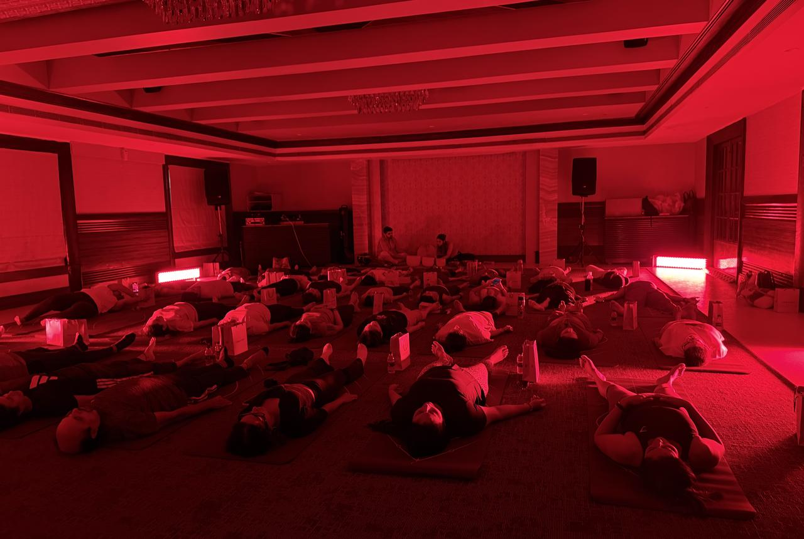
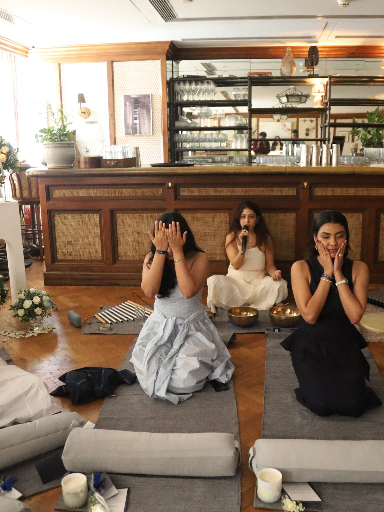

Offline experience is the new marketing channel. Build the one your brand owns.
Paid media stops when the spend stops. A sponsorship borrows someone else’s room. We design and run an offline wellness experience that belongs to your brand: the format, the guest list, the film, and a reason to come back next quarter.
Automotive, fine jewellery, watches, luxury real estate and hospitality. One partner, end to end.
ForevermarkAce BlendIronycLukson JewelleryRiactiveThe Quorum ClubThe ClubSkinvestCha WellnessGreen ProteinElixir WellnessEnrich BeautyForevermarkAce BlendIronycLukson JewelleryRiactiveThe Quorum ClubThe ClubSkinvestCha WellnessGreen ProteinElixir WellnessEnrich Beauty
01The shift
Attention can be bought. A room has to be built.
Your customer has stopped looking at the feed and started showing up in person. Her attention, her money and her sense of herself now live in a room built around how she wants to feel. The only question is whether your brand is in that room, and whether the room is yours.
Option one
Paid media and creators
Rented attention, priced against everyone bidding for the same feed.
It stops when the spend stops.
Impressions, not relationships.
Nothing is left behind.
Option two
Sponsoring someone else’s night
Association without ownership, one logo among ten.
The audience belongs to the organiser.
The format is not yours to run again.
You are a line in someone else’s budget.
The third channel
A room your brand owns
Designed around the brand, run by one team, built to repeat.
A format built for you, and built to run again.
A guest list you shape, and keep.
Film and stills shot on the day, for your channels.
60 million
luxury customers gone. 400 million in 2022, around 340 million in 2025, with new customer acquisition down a further 5%. They did not leave for a competitor.
faster growth in consumer sentiment toward experiences than toward products. Bain now names experiences over ownership the first of the four forces reshaping luxury.
Outside India, this stopped being an experiment years ago.
Six houses that decided the most valuable thing they could buy was not another impression. It was a room, and a reason for the right people to come back. Turn any card over. Every line is publicly reported, with the source.
Automotive
Range Rover House
The house travels with the car
Clients only
Daylesford ·Park City ·Pebble Beach
What they did
A clients-only travelling house built around the car: sound baths, massage, lectures, a chef’s table. Daylesford in April 2024, then Park City, the Great Barrier Reef and Pebble Beach.
Why it mattersA named format, run again in a new place each season. The car is the invitation, never the agenda.
A jewellery house that built its own dance festival and tours it. London, March to April 2025, across Sadler’s Wells, the Royal Ballet and Opera, Tate Modern and the Southbank Centre.
Why it mattersOwned cultural IP, not a sponsorship. The house is why the work exists, so the association cannot be outbid.
Audemars Piguet replaced the boutique with a private house: a lounge, food, art, a micro-museum, watches almost incidental to the hospitality. More than twenty worldwide.
Why it mattersWhen the room is good enough, the product does not have to be sold in it. The watch follows.
A three-week residency in Anguilla, 1 to 22 March 2024: fitness, beach meditation, private consultations on sleep and movement, open to guests and islanders alike. A summer edition followed in 2025.
Why it mattersOpening the room to the city, not just the guest list, turns a property into a place people belong to.
Wellness engineered into the building rather than added to the brochure, in what is billed as the world’s tallest residential tower at Dubai Marina, with a members’ club attached in Dubai and London.
Why it mattersThe programme is the product. Buyers pay for how the building will be lived in, before it exists.
A pop-up gym where the product is the equipment: yoga with the scarves, kickboxing with the bracelets, voguing with the hats. Free, open to anyone, and it has toured Brooklyn, Paris, Tokyo, Shanghai, Singapore and Los Angeles.
Why it mattersNobody was sold anything, and everybody handled the product for an hour. The whole argument, in one room.
The pattern is the same every time. The product sits inside the experience rather than beside it, the room is small enough to feel chosen, and what is really being built is a reason to return. It is still accelerating: through 2026 Dior has been staffing its own spa programme with Pilates instructors and sleep experts, putting a couture house directly up against the hotels and the retreats (Business of Fashion, 2026). The category is settled abroad. In India it is still open.
And India is ready for it
The audience arrived first. The room is still missing.
India is now the seventh-largest wellness market on earth and the second-fastest-growing, at 11.3% a year against a global average of 6.2%. Run clubs, Pilates floors, breathwork circles and sober mornings are quietly taking the place bars used to hold. What has not been built here is the version of that with a global production bar and a brand inside it. That is the opening, and it closes once somebody takes it.
Run clubsPilatesBreathworkSound healingRecoverySober mornings
What the record says
India’s live experiences business is worth about ₹13,000 crore, heading for ₹17,000 crore, and grew 44% in a single year, the fastest-growing segment in media and entertainment. Of Indian consumers, 78% would rather spend on an experience than a product, 59% remember the brands they met on the ground and 55% report higher purchase intent afterwards.
And the reason it is still not being done properly: asked what stops them, 71% of Indian brands name a lack of expertise, ahead of budget at 57%. The appetite is running well ahead of anything built to hold it.
Forevermark by De Beers ·Millemoi collection ·Soho House Mumbai ·6 September 2026
A diamond house spent a Sunday morning not selling diamonds.
Twenty-five invited guests. A sharing circle, guided meditation and breathwork, then sound healing, closing into brunch. The Millemoi collection was worn for three hours by the exact women the brand wants wearing it. No brand speech, no stage, nothing for the client to run on the day.
Why a wellness morning, for a diamond brand
A counter gives you ninety seconds and a mirror. A morning gives you three hours, a room of people who chose to be there, and a piece they have worn through something they will remember. None of that is buyable with media.
What we ran
Concept, format and running order, around the collection.
Venue, design and a display built into the space.
Facilitators we select and brief ourselves.
Guest list, invitations and the room on the day.
One film crew, shooting for both brands.
What they got back
A room of the customers paid media cannot reach.
Their pieces worn inside a real moment, for hours.
A finished film and a full set of stills.
Nothing to manage on the day.
A format that runs again without starting over.
Their feedback, after the morning
That it met luxury standards, and Forevermark’s own. That concept, guest list and execution were handled end to end, with nothing for them to step into. That it was outstanding.
Shared by the Forevermark team after the event. Relayed, not quoted.
What it would be for you. The same team and the same bar, built around your collection, your car or your address, and designed from the first meeting to run again.
04The room
Not a render. Rooms we have already built.
Every frame was photographed on the day it ran, in our own rooms. Nothing is stock, nothing is borrowed. TapClick a frame to read the format.

The full roomWhat happens
Red light recovery
The format
The close of a session, not a session of its own. The flow ends, the floor turns red, and the room lies down where it is.
The quietest and most photographed part of the morning, and the part people describe afterwards.
TapClick to turn back
Film
Inside the rideWhat happens
Immersive Spinning
The format
A rigged floor of bikes inside a 270-degree wraparound projection, thirty minutes end to end.
The screen is where a brand lives. Built into the ride, never a banner at the back.
TapClick to turn back
Film
Sound healingWhat happens
Sound healing
The format
The healer moves through a resting room with chimes, playing over people rather than at them.
Nobody sits up until the last note has gone, and nobody is hurried afterwards.
TapClick to turn back

BreathworkWhat happens
Guided meditation and breathwork
The format
A sharing circle first, then guided meditation and breathwork, at a pace the whole room can follow.
This is what turns a guest list into a room, and it is the part most activations skip.
TapClick to turn back
Film
The restWhat happens
The rest, and the food
The format
The room stays down around the candle ring. The rest is part of the format, not a gap in it.
Then brunch in the same room, so the morning ends in conversation rather than a queue for the lift.
TapClick to turn back
Film
The recovery floorWhat happens
The recovery floor,in motion
The format
Red light, low sound and a held silence, so people leave rested rather than only tired.
It closes the yoga session held to live music, and anchors the Recovery Zone alongside cryotherapy and compression.
TapClick to turn back
Moving on its own · swipedrag to steer
05Signature formats
The IP we bring into the room.
Formats we designed and run ourselves, not sessions bought from a studio and marked up. A brand takes one and makes it theirs, or we build a new one around the brand.
Format 01
Immersive Spinning
Thirty minutes inside a 270-degree wraparound projection. The screens are the brand’s to own.
Format 01 · Immersive Spinning
What we ran
A rigged floor of spin bikes inside a 270-degree wraparound projection, thirty minutes end to end.
Six visual worlds cut to the ride, with instructor, sound and screen content directed by us.
Where a brand sits
The projection itself: a world built to your art direction, with nowhere else to look for thirty minutes.
A finished film of the night, with your audience in it.
Ask for the full case note on the call.
Format 02
Yoga with live music
Hatha flow held to live sitar, flute and tabla, closing into sound healing under red light.
Format 02 · Yoga with live music
What we ran
Hatha flow held to sitar, flute and tabla played live in the room, not a playlist through a speaker.
It closes into sound healing under red light, so people leave settled rather than only stretched.
Where a brand sits
An Indian luxury register that reads as craft rather than import. Hard to buy, easy to remember.
A sharing circle, guided meditation and breathwork, then sound healing, closing into brunch.
Format 03 · Sound healing and breathwork
What we ran
A sharing circle, then guided meditation and breathwork. Sound healing to close, then brunch.
Run for Forevermark by De Beers at Soho House Mumbai on 6 September 2026, with the Millemoi collection in the room.
Where a brand sits
Inside the format, worn and handled for hours, with nothing in the running order that sounds like a pitch.
Best for jewellery, watches and anything worn, held or lived in.
Ask for the full case note on the call.
Swipe for all three
06In their words
Fifteen people who were in the room.
The first two were recorded at the Forevermark morning. The thirteen after them come from a room The Aura House ran on Yoga Day, 20 June 2026: founders, marketing heads and creators, the community a brand wants to belong to. Everyone is named, with their permission. TapClick a phone for sound.
010:00 / 1:06
01 · The brandHimani ChandnaVice President, ForevermarkSoho House Mumbai·6 September 2026
020:00 / 0:55
02 · A guestReetu JainFounder, theweddingwaleSoho House Mumbai·6 September 2026
030:00 / 0:28
03 · In the roomBhoomi DaftaryLuxury content creator and solicitorYoga Day·20 June 2026
040:00 / 1:13
04 · In the roomAarshia SiddiqueFounder and sound healerYoga Day·20 June 2026
050:00 / 0:24
05 · In the roomAditi ShahMarketing head, Lukson JewelleryYoga Day·20 June 2026
060:00 / 0:26
06 · In the roomRiaa KamdarFounder, RiactiveYoga Day·20 June 2026
070:00 / 0:43
07 · In the roomRiaa KulkarniContent creatorYoga Day·20 June 2026
080:00 / 0:31
08 · In the roomPearl ShahWorking professionalYoga Day·20 June 2026
090:00 / 0:18
09 · In the roomKrisha ShahMarketing head, Green ProteinYoga Day·20 June 2026
100:00 / 0:23
10 · In the roomKajol PasswanBridal makeup artistYoga Day·20 June 2026
110:00 / 0:19
11 · In the roomRia ThiteWorking professionalYoga Day·20 June 2026
120:00 / 0:15
12 · In the roomMahek JainWorking professionalYoga Day·20 June 2026
130:00 / 0:15
13 · In the roomHarsh MehtaFounder, V2 EdiblesYoga Day·20 June 2026
140:00 / 0:16
14 · In the roomEsha ShahWorking professionalYoga Day·20 June 2026
150:00 / 0:20
15 · In the roomKhushi GuptaContent creatorYoga Day·20 June 2026
07Root cause
Why brand activations feel expensive and leave nothing behind.
Five whys, the way Toyota runs them. Each answer becomes the next question, so the chain ends on the one thing worth changing rather than on a symptom.
Why 01
Because the next morning nothing was still yours. No format, no audience, no footage.
Why 02
Because the room, the guest list and the crew were all rented from other people.
Why 03
Because ten vendors each held one piece, and nobody held the whole experience.
Why 04
Because it was scoped as a date to deliver, not as a format to own.
Why 05
Because it was bought as one line in a campaign, not as a channel with a second edition.
Root causeBought as an event. Never built as a channel.
So we build it as one. The first conversation is about the format, not the date. We design something that belongs to your brand and is meant to run again, we hold the whole thing ourselves, and we hand back the room, the footage and the list. That is also where the economics turn: the concept, the format and the production design are paid for once, so every edition after the first buys only the room and the day. A one-night activation pays that build cost every single time and never gets there.
08Built for your category
What this looks like in your business.
Five categories we build for. One is proven with a client. The rest are designed, costed and ready to run. Bring us the brief and we will bring the format.
Automotive
The marque brings them in, the morning brings them back
Owners, and the people who should be owners, spend a morning built around movement and recovery, with the marque as the reason they were invited rather than the thing being demonstrated.
Abroad: Range Rover House.
Fine jewellery
Three hours worn beats ninety seconds at a counter
Pieces worn and handled through a real morning by the women you most want wearing them, in a room built around the collection.
Proven: Forevermark by De Beers, 6 September 2026.
Watches
A collectors’ circle small enough to feel private
Twelve to twenty, not two hundred. Movement, sound and recovery around a table where the piece never comes off, and a conversation about the watch that nobody was told to have.
Abroad: AP House, the permanent version.
Luxury real estate
Sell the life before the building is finished
Run the format in the show residence so a buyer walks through the amenity working, then keep running it for residents so the address holds its promise.
Abroad: Six Senses Residences.
Hospitality
Your own wellness IP, not another spa menu
A signature format that runs monthly, fills the quiet hours and brings a city community through the doors. Something to be known for that a competitor cannot copy by buying the same equipment.
Abroad: Four Seasons × Sensei.
Swipe for all five
What you own afterwards
An evening disappears. A format compounds.
The difference is entirely in what is still yours the following Monday. An evening is an expense that clears. A format is an asset: it holds an audience you can reach again without paying to rediscover it, and it gets cheaper and better every time it runs. This is what we hand over.
What we will not do
No brand speech. No stage. No logo wall in the middle of a breathing exercise. No padding the room with people who were never going to buy. If the guest list has to be filled with strangers to reach a headcount, the headcount was wrong.
The format. Designed around your brand, documented, and yours to run again.
The room. A guest list we build with you, invite ourselves, and hand back with consent.
The film and the stills. Shot on the day by one crew working for both of us.
One contract. Venue, design, facilitators, hospitality, production and film under a single team, instead of ten vendors and ten margins.
The debrief. Who came, who stayed to the end, what worked, and what we would change.
The next edition. Scoped before the room empties, because the second costs less and works harder.
09How it starts
Start with one room.
Start here · one edition
One room
One experience, designed around the brand and run end to end, so you see the bar before you commit to a calendar.
Three to four editions
A season
The format finds its audience, the guest list compounds, and the cost of the room falls every time it runs.
Annual
An owned IP
The format becomes yours: named, scheduled, and attached to your brand rather than an agency’s calendar.
What comes back after every edition
The film, the stills, the guest list and a written debrief, as set out above. Scope and timings for each are fixed in the proposal, before anything is booked.
Paid media rents you attention for as long as you keep paying.We build a room your brand keeps, and a reason for the same people to come back to it.
A sponsorship puts your logo in somebody else’s evening.Your brand is the reason the evening exists, and the audience is yours afterwards.
An events agency delivers one night, brilliantly, and then leaves.We build a format you can run again next quarter without starting over.
10A note from the founder
Your customer has already moved. She is in a studio at seven in the morning, choosing the weekend that leaves her better. That is the room your brand should be in, and almost nobody in India has built it properly yet.
My mission is to redefine wellness in India, and the luxury houses are how it reaches scale fastest. You have the audience and the standards. We have the formats, the facilitators and the production bar. Put those together and you get something neither a media plan nor a party can buy.
You won’t need ten vendors. One team, one contract, and a format that is still yours next year.
Pooja ShahFounder
MSc in Finance with Risk Management, and two years working in the United Kingdom. That global standard is the bar we hold here.
Four to five years in health and wellness, three to four of them inside the corporate sector.
Premium by design, with facilitators we select and brief ourselves. No compromise on who is in the room.
Designs and personally runs all three signature formats, with the Recovery Zone alongside them.
Founder of The Aura House, operated by Ohm Global Wellness Private Limited, Mumbai. Work featured in Mid-Day, News18, Blended Stories and Bbuzz.